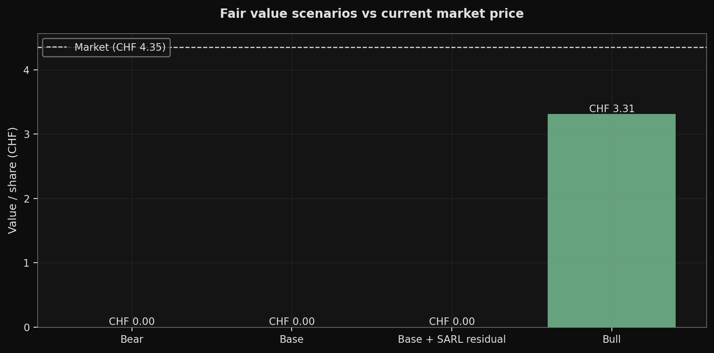
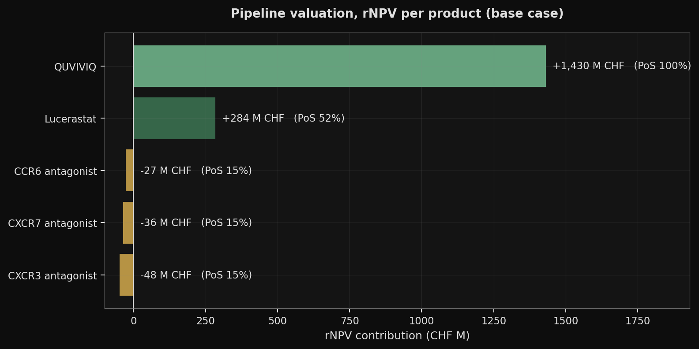
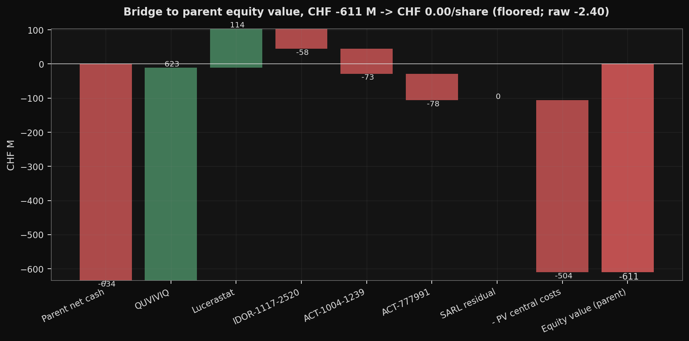
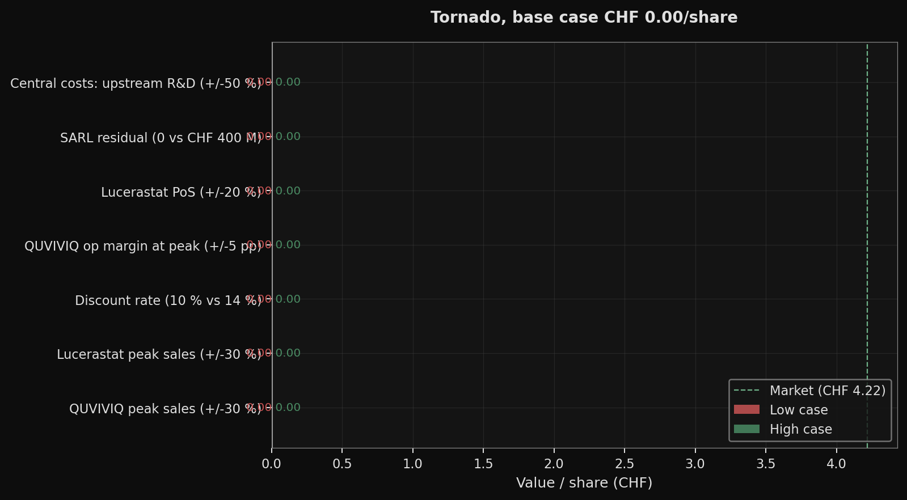
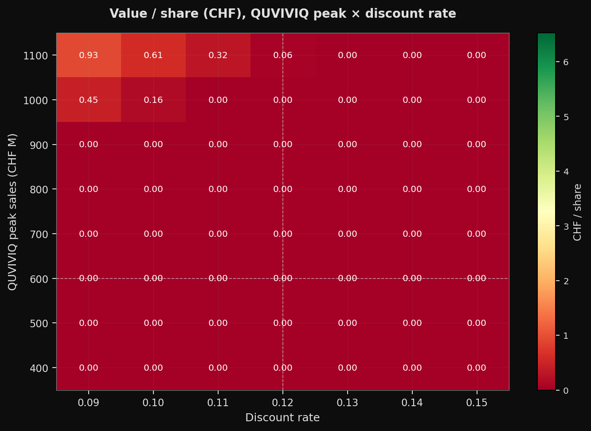

Results
Per-share fair value and investment note
TL;DR
Scenario headline numbers
| Scenario | Value / share (CHF) | Distance to market |
|---|---|---|
| Bear | 0 | -100 % |
| Base | 0 | -100 % |
| Base + SARL residual | 0 | -100 % |
| Bull | 2.75 | -35 % |

Pipeline breakdown
QUVIVIQ does virtually all the work in the base case.

| Product | Phase | PoS | rNPV (CHF M) | PV op CF (CHF M) | PV dev costs (CHF M) |
|---|---|---|---|---|---|
| QUVIVIQ (daridorexant) | marketed | 100.0 % | +623 | +623 | +0 |
| Lucerastat | phase3 | 52.4 % | +114 | +393 | +92 |
| IDOR-1117-2520 (CCR6 antagonist) | phase2 | 15.1 % | -58 | +205 | +89 |
| ACT-1004-1239 (CXCR7 antagonist) | phase2 | 15.1 % | -73 | +164 | +98 |
| ACT-777991 (CXCR3 antagonist) | phase2 | 15.1 % | -78 | +126 | +97 |
The three early-stage negative rNPVs reflect the arithmetic of applying a 15.1 % Phase 2 cumulative to-approval probability against the phase-weighted development costs out to filing. They should be read as “peak sales placeholder too low vs the phase-weighted dev spend”, not as “the programme should be discontinued”. Phase 2 proof-of-concept readouts (CCR6 Q4 2026, CXCR3 2027, CXCR7 Q2 2028) will reanchor those figures materially in either direction.
From cash to equity value

Sum of product rNPVs : CHF +528 M
+ Parent net cash : CHF -634 M
+ SARL residual (base = 0) : CHF +0 M
- PV central costs (G&A + upstream research) : CHF -504 M
= Equity value (parent) : CHF -611 M
/ Shares outstanding : 254.0 M
= Fair value / share (raw) : CHF -2.40
= Fair value / share (floored, limited liability) : CHF +0.00Parent net cash is negative because we attribute CHF 723 M of debt to the parent equity holder (J&J convertible 335 + Pharmakon term loan 150 + convertible bonds 49 + other financial 189 incl. R-Bridge royalty monetization) against only CHF 89 M of group cash (an upper bound at 30 Jun 2026 - see TODO_DATA.md). The CHF 762 M of SARL notes are excluded, they are non-recourse to IDIA shareholders and are serviced by the SARL assets.
The SARL New Money Facility (CHF 150 M nominal, CHF 105 M drawn at YE 2025) was repaid in full on 26 Jun 2026 from the first Pharmakon tranche, so it does not appear in the current debt line.
Key assumptions and sources
Every input is either sourced to a public document (sourced) or explicitly flagged as an assumption or placeholder. The audit list of placeholders lives in TODO_DATA.md; the status column below is the per-input tag.
| Input | Base case | Status | Source |
|---|---|---|---|
| Discount rate (mid-year) | 12% | assumption | Standard biotech WACC 11-13 %; sensitivity 10 % / 14 % |
| PoS transitions set | BIO 2011-2020 | sourced | BIO/Informa/QLS ‘Clinical Development Success Rates 2011-2020’ (2021) |
| PoS cumulative, Phase 2 -> approval | 15.1 % | sourced | Derived from BIO 2021 transitions (0.289 * 0.578 * 0.906) |
| PoS cumulative, Phase 3 -> approval | 52.4 % | sourced | Derived from BIO 2021 (0.578 * 0.906) |
| QUVIVIQ peak sales | CHF 600 M | assumption | Bracket vs Belsomra/Dayvigo comps + GlobalData 7MM DORA class forecast |
| QUVIVIQ op margin at launch (2026) | 5% | assumption | Idorsia 2026 commercial-profitability target (June 2026 pres. p.45) |
| QUVIVIQ op margin at peak (2030) | 30% | assumption | Specialty biotech mature range 25-40 % |
| QUVIVIQ ramp (launch -> peak) | 8 years (peak 2030) | assumption | Consistent with +120 % (2024->2025) and +49 % (2025->2026 guided) growth |
| QUVIVIQ 2026 revenue guidance | CHF 200 M | sourced | Idorsia June 2026 investor presentation p.45 |
| QUVIVIQ US / EU exclusivity | 2036 / 2037 | sourced | Idorsia June 2026 investor presentation p.15 |
| Lucerastat peak sales | CHF 400 M | assumption | Fabrazyme (~USD 1 bn) / Galafold (~USD 450 M) comparables |
| Lucerastat Phase 3 remaining cost | CHF 100 M | assumption | Orphan Fabry registrational trial estimate (vs DiMasi avg CHF 322 M, inapplicable) |
| Group cash YE 2025 (upper bound at 30/06/26) | CHF 89 M | placeholder | AR 2025 p.145; SARL-only sub-balance not disclosed, see TODO_DATA.md |
| Parent-attributable debt | CHF 723 M | sourced | AR 2025 p.145 + Pharmakon media release 9/26 Jun 2026 |
| J&J convertible loan (treated as debt in base case) | CHF 335 M, strike CHF 11.51 | sourced | Idorsia media release 9 Jun 2026; matures 15 Jun 2027 |
| Central costs: G&A year 1 | CHF 71 M/year | sourced | AR 2025 non-GAAP SG&A: G&A line (CHF 71 M, excluding commercial) |
| Central costs: upstream research year 1 | CHF 25 M/year | placeholder | ~27 % of AR 2025 R&D (non-program-specific), see TODO_DATA.md |
| Shares outstanding | 254.0 M (Q1 2026) | sourced | Idorsia Q1 2026 Financial Report, 31 Mar 2026 |
| Current share price | CHF 4.22 (2026-10-13) | sourced | yfinance IDIA.SW latest close via scripts/update_price.py |
Peak sales for QUVIVIQ and lucerastat are triangulated against public comparables and company disclosure, not constructed from a bottom-up patient × penetration × price breakdown - Idorsia does not publish the inputs for that calculation, so we use the comparables approach and document each anchor in the product entry.
What the valuation rides on

Two variables dominate in the base case: QUVIVIQ peak sales and the SARL residual assumption (0 vs CHF 400 M). The central-costs upstream placeholder (+/-50 %, listed in TODO_DATA.md) is in the mid-tier of levers; discount rate and lucerastat PoS matter but do not move the needle on their own.
Critical read: no single variable at its stress case reaches the current market price. Closing the gap requires multiple positive assumptions simultaneously, that is the market’s implicit bet.

DEA Schedule V update (not full descheduling)
On 11 Aug 2026, the DEA proposed to reclassify DORAs (QUVIVIQ, Belsomra, Dayvigo) from Schedule IV to Schedule V, not a full descheduling. Schedule V is the least-restrictive controlled substances tier (looser prescribing / refill constraints) but still a scheduled drug, so prescriber dispensing frictions are reduced without being eliminated. The upside scenarios in this note treat the reclassification as a modest commercial accelerator, not as a transformational catalyst. Source: Marktpuls, Aug 2026.
QUVIVIQ growth trajectory
| Year | Net sales (CHF M) | YoY growth |
|---|---|---|
| 2023 | 31 | - |
| 2024 | 61 | +97 % |
| 2025 | 134 | +120 % |
| 2026 | 200 | +49 % |
Realised and guided QUVIVIQ growth is not a steady “~+50 % YoY” - it decelerated materially from +120 % (2024->2025) to +49 % guided (2025->2026). To reach the CHF 600 M peak by 2030 (an 8-year ramp from launch), 2026->2030 only needs ~32 % annual CAGR, which is consistent with growth decelerating further as the US DORA class matures and the EU reimbursement footprint fills in.
Scenarios
| Scenario | V/share pre if-converted (CHF) | V/share post if-converted (CHF) | J&J converted? |
|---|---|---|---|
| Bear | 0 | 0 | no |
| Base | 0 | 0 | no |
| Base + SARL residual | 0 | 0 | no |
| Bull | 2.75 | 2.75 | no |
Fraction of the base->market gap closed by Base + SARL residual: 0 % (replaces the “roughly two thirds” claim from v1.0, which used stale numbers).
Verdict
The gap between the model and the market has widened, and so has the required set of assumptions behind the market price.
The v1.1 base case floors at CHF 0.00 / share (raw equity value CHF -611 M). This is a hard lower bound under three jointly binding constraints: BIO 2011-2020 PoS transitions applied cleanly, QUVIVIQ margin ramping from the 2026 commercial-profitability target to a mid-range specialty 30 % at peak, and PV of unallocated central costs deducted from the equity bridge. The market at CHF 4.22 therefore embeds assumptions that, on a probability-weighted basis, span the full range of upside paths:
- A SARL residual at least matching the CHF 400 M stressed in scenarios (not sufficient on its own to clear the zero floor under the current cost structure).
- A QUVIVIQ trajectory well above the CHF 600 M base-case peak (closer to the CHF 1,000 M Bull case) and a discount rate at the low end of the biotech WACC range.
- A clean refinancing of the CHF 335 M J&J convertible on 15 June 2027: either cash repayment (reducing the equity bridge directly) or conversion if V/share exceeds CHF 11.51 (dilutive but debt-eliminating; the if-converted scenario is already applied in the Bull case and still prints CHF 2.75 / share).
The reconciled range CHF 0.00 - 2.75 / share is the honest answer under the method as corrected; the market price sits noticeably above even the Bull. That is not a claim IDIA is overvalued 1.5×: it is a claim the market is pricing a combined scenario that is outside the parameter space our scenarios span (e.g. a QUVIVIQ peak above CHF 1,000 M, SARL residual above CHF 600 M, central cost normalisation faster than modelled, discount rate below 10 %).
My reconciled personal read: at CHF 4.22, IDIA is priced for a genuinely bullish composite outcome where (a) the DEA Schedule V reclassification, pediatric programme and EU reimbursement all contribute to a QUVIVIQ ceiling well above the CHF 600 M used here; (b) SARL asset performance clears the ring-fenced debt materially ahead of maturity; (c) the Pharmakon loan does not need to be extended on worse terms; and (d) the J&J convertible either converts (dilution absorbed by rerating) or is refinanced on terms that do not tighten covenants. Each of these is probabilistic; none is binary. The investable thesis is a conditional long on specific catalyst delivery (CCR6 PoC Q4 2026, QUVIVIQ US run-rate exit 2026, SARL progress disclosures) with limited margin of safety at the current level under the base case.
Don’t read any point estimate here as a price target. Read the status column of each input, the four scenarios, and the gap-covered percentage. Every assumption is traceable; every scenario has an explicit narrative; every CHF of the gap between the model and the market can be tied to a specific bet or a specific placeholder.
Limitations
- rNPV is an order-of-magnitude tool, not a precise valuation.
- Phase 2 peak sales (CCR6, CXCR7, CXCR3) are placeholders and drive their negative rNPVs. A positive CCR6 PoC readout at Q4 2026 would materially reshape those figures.
- The J&J convertible is a cost, not an upside: either dilution (if V/share > strike at maturity) or a CHF 335 M cash repayment on 15 Jun 2027. The if-converted test applies in scenarios where V/share > strike.
- Central costs are modelled as a decline-then-floor-then-proportional curve (71 M G&A sourced + 25 M upstream placeholder at year 1, decay 10 %/year to floor 50 M to 2040, then scaled by weighted revenue to 2050 with hard floor 10 M). Not a line-by-line projection.
- Upstream research is deducted but no value is attributed to the unborn pipeline candidates that upstream research will generate. This biases the model downward.
- QUVIVIQ post-launch R&D (pediatric programme, label extensions) is not modelled in either the per-product dev-cost curve (prelaunch only) or central costs.
- Working capital and capex are netted to zero; tax proxied by the operating margin; product outcomes are assumed independent.
- The SARL contingent liability to J&J (30 % aprocitentan + 10 % each selatogrel / cenerimod proceeds) is disclosed but not fully modelled, a known refinement.
- All historical data and the current share price are pinned to specific dates (
data/market.jsonfor the quote;A.VALUATION_DATE = {python} A.VALUATION_DATEfor the balance sheet). Re-runscripts/update_price.pybefore each deploy.
Don’t read any point estimate as a price target. Read the sourcing and the scenarios: every input has a status (sourced / assumption / placeholder), every scenario has an explicit narrative, and every CHF of the gap between the model and the market can be tied to a specific bet.
Full computation trail: interactive notebook | methodology | source on GitHub.